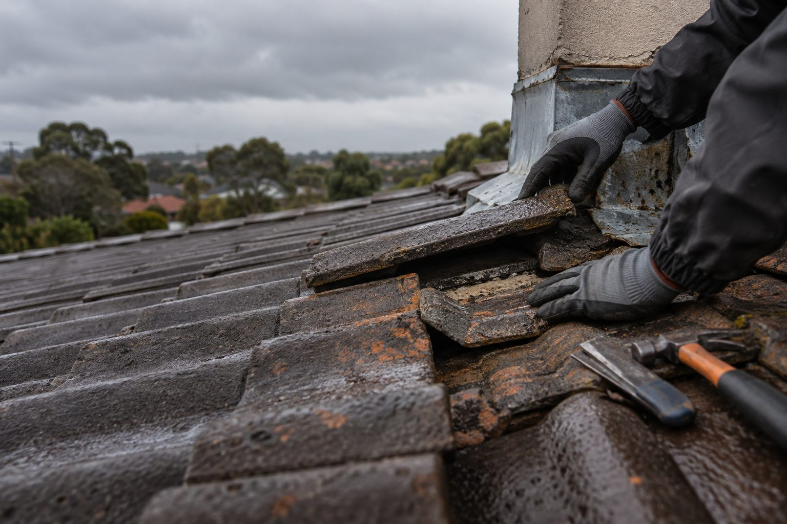

Roof repair warning signs Adelaide
Roof Repair Warning Signs Adelaide
Which roof repair warning signs should Adelaide homeowners act on?
See the signs Ellis checks on site and how we plan roof repairs, maintenance and a clear quote.
Read article ↗
Adelaide roofing advice
Search clear, practical guides on roof repairs, leaks, tiles, ridge capping, gutters and roof restoration.
Article library
Each guide is a standalone article with practical limits, safety notes and a clear source trail.
Roof repair warning signs Adelaide
See the signs Ellis checks on site and how we plan roof repairs, maintenance and a clear quote.
Read article ↗Roof leak detection Adelaide
Learn why water marks can be distant from their entry point and what information helps a repair discussion.
Read article ↗Tile roof repairs Adelaide
Explore the limits of targeted tile work, safe observation and the roof details that should be checked nearby.
Read article ↗Ridge capping Adelaide
See how bedding, pointing and ridge caps work together, and the warning signs worth recording from ground level.
Read article ↗Gutter cleaning Adelaide
Separate gutter and downpipe symptoms from roof-leak symptoms so the next step is based on the right problem.
Read article ↗Roof restoration versus replacement Adelaide
Compare the work scope and roof condition before choosing repair, restoration or replacement.
Read article ↗Talk to Ellis
Tell us your Adelaide suburb, what you have noticed and when it first appeared.